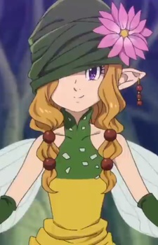

| |
Acerola |
|
Acerola is a Ghost-type Pokemon Trainer and a member of the Alola Elite Four. She is young girl who is markedly delightful. She is accustomed to the supernatural and the darkness surrounding Ghost Pokemon.Accerola often visits Nanu to ensure him to keep up with his Island Kahuna duties. |
|  |
Gerheade |
- The Seven Deadly Sins: Revival of The Commandments
- The Seven Deadly Sins: Wrath of the Gods
|
Gerheade is a fairy and serves as an adviser to the Second Fairy King. She is a mysterious, strange, and aloof fairy. However, she takes her job as an adviser and the Fairy tradition very seriously. Gerheade has a distaste and mistrust toward humans. |
 |
Nina Tucker |
- Fullmetal Alchemist Brotherhood
|
Nina Tucker was the daughter of Shou Trucker. She was happy, cheerful and excitable young girl. |
 |
Rena Sayama |
|
Rena Sayama is a popular singer and the daughter of police officer Yosuke Endo. She is a big fan of Ultraman. |
 |
Stella Barklem |
|
Stella Barklem is young friend of Chise Hatori and older sister of Ethan Barklem. She is very knowledgable and mature for her young age and is talented at baking sweets. |
 |
Yui Sakamoto |
|
Yui Sakamoto is a young girl who can see Demons. She is very shy child, and usually does not display this in front of her loved ones. |


.jpg)